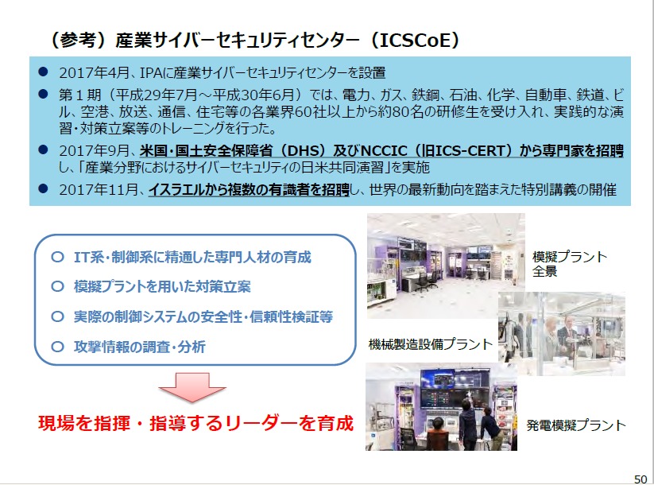
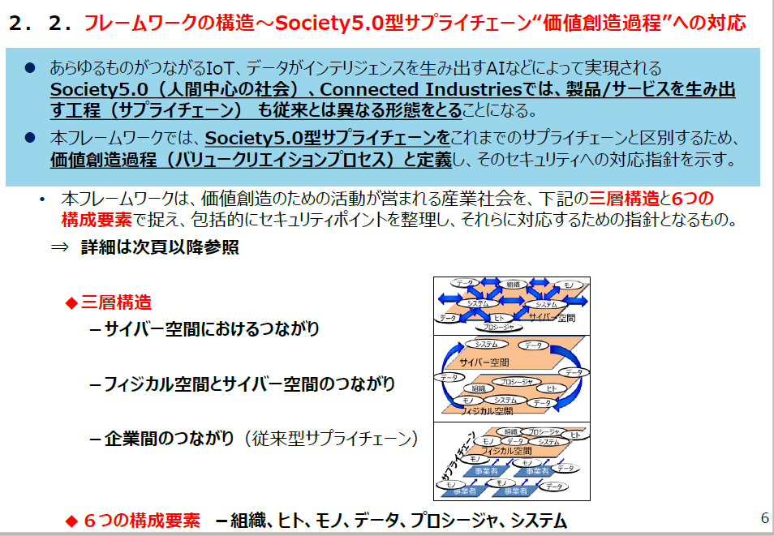
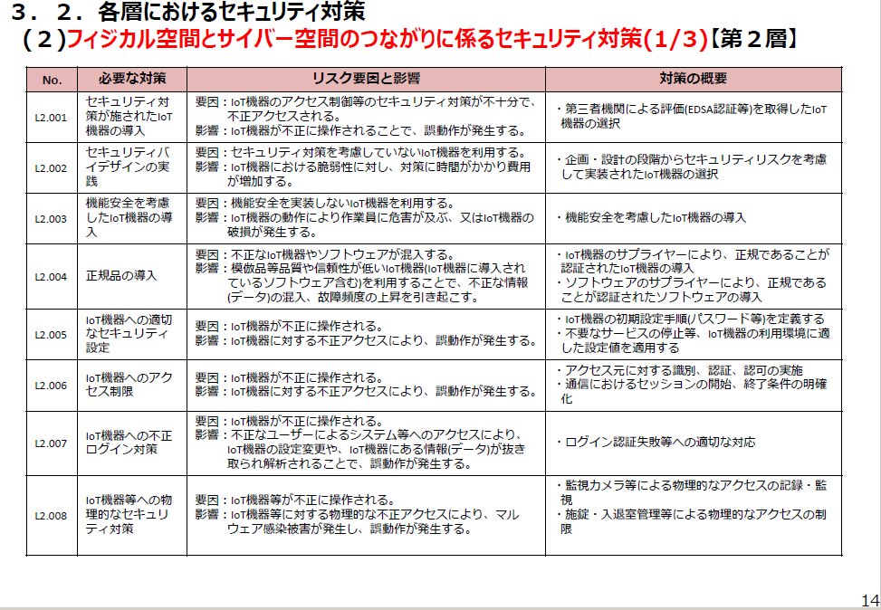

- Sec01-03 サイバーセキュリティ関連各種プレゼン資料
- 改版履歴
- 2018年12月13日三角氏、奥家氏資料追加
- 2018年5月17日
- クラウド化推進社会と我が国のサイバーセキュリティ戦略
- 内閣官房内閣サイバーセキュリティセンター(NISC) 内閣審議官
経済産業省(METI) サイバーセキュリティ・情報化審議官
三角育生 - トップ
- Society 5.0では
- 我が国のデータ利活用の現状
- 日本では、諸外国に比べるとデータ利活用の遅れをとっている
- しかし、製造現場(工場内)においてデータを取得している企業の割合は増加している
- Connected Industries実現のためのデータ関連制度の整備
- サイバーセキュリティ戦略
- １ 策定の趣旨・背景
- • Society5.0
- • サイバー空間と実空間の一体化の進展
- ２ サイバー空間に係る認識
- • 人工知能（AI)、IoTなど→人々に豊かさ
- • 多大な経済的・社会的損失が生ずる可能性は指数関数的に拡大
- ３ 本戦略の目的
- • 自由、公正かつ安全なサイバー空間
- • 持続的な発展のためのサイバーセキュリティ（サイバーセキュリティエコシステム）
- ← ①サービス提供者の任務保証、②リスクマネジメント、③参加・連携・協働
- (1)経済社会の活力の向上及び持続的発展
- セキュリティに関する経営層の関わり
- NIKKEI225企業の情報提供
- サイバーセキュリティ経営ガイドライン
- 現状：日本企業は、委託先等の取引先への対策が欧米に比べて遅れている
- サイバー保険等と連携して中小企業を支援する『サイバーセキュリティお助け隊』の創設
- サプライチェーン構造の変化を踏まえ、新たな枠組みを提唱
- (2)国民が安全で安心して暮らせる社会の実現
- サイバーセキュリティ基本法の一部を改正する法律案の概要
- 政府のビジョンとクラウドの位置づけ
- • クラウド・バイ・デフォルト原則を採用
- • 成長戦略、サイバーセキュリティ戦略等において、安全性評価の検討を位置づけ
- 政府情報システムにおけるクラウドサービスの利用に係る基本方針(2018 年6月7日ＣＩＯ連絡会議決定)
- 未来投資戦略2018(2018 年6月15日閣議決定)
- サイバーセキュリティ戦略(2018年7月27日閣議決定)
- クラウドサービスに係る世界の潮流（海外政府調達について）
- • 海外の政府調達では、多くが①クラウドファーストを掲げ、②その直後にクラウドサービスの政府調達に係る認証制度を導入
- • 日本では、2018年6月にクラウド・バイ・デフォルト原則を採用したところ、安全性評価の仕組みの検討が必要
- クラウドサービスの安全性評価に関する検討会におけるスコープ
- クラウドサービスの安全性評価に関する検討会におけるスコープ

- • ①基準活用の前提となる情報・情報システムのクラス分けに関する議論と、②クラウド調達の基準等に関する議論を行う
- • 上記に加えて検討すべき事項については、継続的な検討事項として項目整理を行う
- (3)国際社会の平和・安定及び我が国の安全保障への寄与

- １．自由、公正かつ安全なサイバー空間の堅持
- ２．我が国の防御力・抑止力・状況把握力の強化
- ３．国際協力・連携
- (4)サイバーセキュリティに関する共通基盤的な取組の推進

- １．人材育成・確保
- 「戦略マネジメント層」の育成・定着
- 実務者層・技術者層の育成
- 人材育成基盤の整備、国際連携の推進
- ２．研究開発の推進
- 実践的な研究開発の推進
- （検知・防御等の能力向上、不正プログラム等の技術的検証を行うための体制整備等）
- 中長期的な技術・社会の進化を視野に入れた対応
- ３．全員参加による協働
- サイバーセキュリティの普及啓発に向けたアクション
- プランの策定とそれに基づく連携・協働
- 「サイバーセキュリティ月間」などを通じた情報発信
- サイバーセキュリティ経営を進める戦略マネジメント層の育成の例
- • セキュリティの理解を持って高度な経営判断を補佐する人材『戦略マネジメント層』を育成するために、産学官連携やICSCoEを拠点としたプログラムを開始。
- サイバーセキュリティ経営を含む『次世代経営人材の育成プログラム』の開始＜産学官連携＞
- CISO人材の育成プログラムの開始＜IPA産業サイバーセキュリティセンター＞
- サプライチェーンサイバーセキュリティの実現に必要な研究開発（SIP第2期）
- A.信頼の創出・証明
- 多様なIoTシステム･サービスやサプライチェーン全体のセキュリティ確保に必要な信頼の創出・証明技術
- B.信頼チェーンの構築・流通
- 信頼チェーンを構築し、必要な情報をセキュアに流通させる技術
- C.信頼チェーンの検証・維持
- 信頼チェーンが安全に運用されていることを検証し、維持することを可能にする技術
- 産業分野におけるサイバーセキュリティ～サイバー・フィジカル・セキュリティ対策フレームワークを中心に～
- 経済産業省商務情報政策局
サイバーセキュリティ課長
奥家敏和 - 目次

- １．はじめに
- ~サイバー攻撃の脅威レベルの向上と海外の動き
- ２．産学官の検討体制の構築
- ~産業サイバーセキュリティ研究会
- ３．「Society5.0」において必要なセキュリティ対策
- ~サイバー・フィジカル・セキュリティ対策フレームワークの策定
- ４．海外のサプライチェーンの強化
- ５．サイバーセキュリティ対策の基盤整備
- ~経営者の意識喚起、人材育成
- ６．サイバーセキュリティビジネスの創出
- ~エコシステムの構築
- １．はじめに~サイバー攻撃の脅威レベルの向上と海外の動き
- サイバー攻撃の脅威レベルの増大（サプライチェーンを通じた攻撃（水平的脅威））ランサムウェア”WannaCry”の猛威

- ・平成29年５月、世界の少なくとも約150か国において、Windowsの脆弱性を悪用したランサムウェア「WannaCry」に感染する事案が発生。
- ・感染した欧州企業から、サプライチェーン経由で国内企業も感染。
- サイバー攻撃の脅威レベルの増大（サプライチェーンを通じた攻撃（水平的脅威））台湾積体電路製造（TSMC）のランサムウェア感染事案
- 台湾積体電路製造（TSMC）のランサムウェア感染事案
- ・2018年8月3日、半導体受託生産の世界最大手である台湾積体電路製造（TSMC）※において、主力工場内ネットワーク機器がマルウェア感染。6日午後に復旧するまでの間、生産が一時停止。
- サイバー攻撃の脅威レベルの増大（サプライチェーンを通じた攻撃（水平的脅威））携帯端末に不正プログラムが仕掛けられた事例
- ・メモリに不正プログラムが仕掛けられ、保存されている情報の不正送信や改ざんを受けるリスクが顕在化。
- ・製造時に物理的に組み込まれた不正プログラムは検知や削除が容易ではない。
- サイバー攻撃の脅威レベルの増大（情報システムを越えて制御システムに達する攻撃（垂直的脅威））制御系にまで影響が波及

- ・米国ICS-CERTの報告では、重要インフラ事業者等において、制御系にも被害が生じている。
- ・ウクライナでは、2015年と2016年にサイバー攻撃による停電が発生。2016年の攻撃(CrashOverRide)では、サイバー攻撃のみで、停電が起こされた。
- （参考）米国電力事業者を標的とした北朝鮮によるサイバー攻撃
- ・2017年9月22日、北朝鮮のハッカー集団「TEMP.Hermit」が複数の米電力事業者を標的にスピアフィッシングメール攻撃を行った（FireEye報告書より）。
- ・今回の攻撃は、検知・阻止されたものの、電力事業者のシステムに致命的な打撃を与えるための偵察活動であったと見られている。
- 取引先へのサイバーセキュリティ対策の遅れ
- ・日本企業では、委託先等の取引先への対応が大幅に遅れている。
- セキュリティインシデントの検知に要する日数

- ・世界的な動向を見ると、セキュリティインシデントの検知に要する日数は年々減少傾向にある。
- ・一方で、APACに目を向けると、昨年と比較して検知に要する日数が遅くなっており、欧米と比較しても大幅に遅いという傾向にある。
- 攻撃ライフサイクルの段階毎の検知状況
- ・攻撃ライフサイクルの段階毎の検知状況を見ると、多くは「水平展開」、「持続維持」といった既に攻撃が活発化している段階で検知されている。
- ・検知の仕組みを活用できる人材（スキル）が不足していることにより、早期の段階で攻撃の兆しを見逃している可能性がある。
- 欧米において強化される『サプライチェーン』サイバーセキュリティへの要求

- ・米国、欧州は、サプライチェーン全体に及ぶサイバーセキュリティ対策を模索。
- ２．産学官の検討体制の構築~産業サイバーセキュリティ研究会
- サイバーセキュリティ政策の方向性
- １．産業政策と連動した政策展開
- ①重要インフラの対策強化
- －情報共有体制強化等
- ②IoTの進展を踏まえたサプライチェーン毎の対策強化(Industry by industry)
- －防衛関係、自動車、電力、スマートホーム等の分野別検討と技術開発・実証の推進
- ③中小企業のサイバーセキュリティ対策強化
- 2．国際ハーモナイゼーション
- ①日米欧間での相互承認の仕組みの構築
- ②民間主体の産業活動をゆがめる独自ルールの広がり阻止
- 3．サイバーセキュリティビジネスの創出支援
- ①産業サイバーセキュリティシステムを海外に展開
- ②サービス認定創設、政府調達などの活用
- ４．基盤の整備
- ①経営者の意識喚起
- ②多様なサイバーセキュリティ人材の育成（ICSCoE等）
- ③サイバーセキュリティへの過少投資解決策の検討
- 産業サイバーセキュリティ研究会とWGの設置による検討体制
- ３．「Society5.0」において必要なセキュリティ対策~サイバー・フィジカル・セキュリティ対策フレームワークの策定
- サイバー・フィジカル・セキュリティ対策フレームワークを策定する目的
- ・「Society5.0」、「Connected Industries」の実現へ向けて、産業構造、社会の変化に伴うサイバー攻撃の脅威の増大に対応することが必要。
- ・このため、産業に求められるセキュリティ対策の全体像を整理し、産業界が活用できる『サイバー・フィジカル・セキュリティ対策フレームワーク』の策定を進めている。
- １．各事業者がフレームワークを活用することで期待される効果
- ・「Society5.0」、「Connected Industries」の実現に求められるセキュリティの確保
- ・製品・サービスのセキュリティ品質を差別化要因（価値）にまで高めることによる競争力の強化
- ２．フレームワークの特徴
- ①各事業者が実施するセキュリティ対策のオペレーションレベルで活用できる
- ・社会として目指すべき概念だけではなく、各事業者が実際にセキュリティ対策を実施するうえで活用できる内容にする。
- ②セキュリティ対策の必要性とコストの関係を把握できる
- ・サプライチェーン全体を構成する中小企業を含めた事業者が、実際に対策を行えるよう、想定されるリスクと必要な対策のコストのバランスをイメージできるような内容にする。
- ・セキュリティレベルを保ったままでコストを圧縮できるような内容にする。
- ・リスクシナリオベースの考え方も考慮した内容にする。
- ③グローバルハーモナイゼーションを実現する。
- ・グローバルサプライチェーンの中で、日本における製品・サービスのセキュリティ対策が海外からも認められるよう、諸外国の動きをよく取り入れ、ISMSやNIST Cybersecurity Frameworkなど米欧などの主要な認証制度との整合性を確保し、相互承認を進めていくことができる内容にする。
- フレームワークの構造～「Society5.0」型サプライチェーン“価値創造過程”への対応
- ・あらゆるものがつながるIoT、データがインテリジェンスを生み出すAIなどによって実現される「Society5.0」（人間中心の社会）、「Connected Industries」では、製品/サービスを生み出す工程（サプライチェーン）も従来の定型的・直線的なものとは異なる、多様なつながりによる非定型の形態を取ることになる。
- ・本フレームワークでは、このような「Society5.0」型サプライチェーンをこれまでのサプライチェーンとは区別して認識するため、価値創造過程（バリュークリエイションプロセス）と定義し、「Society5.0」、「Connected Industries」によって拡張したサプライチェーンの概念に求められるセキュリティへの対応指針を示す。
- 三層構造アプローチの意義

- 3つの層には、価値創造過程において確保されなければならない機能・役割が存在する。
- ・例えば、各層において以下で示すようなことが確保されていなければ、価値創造過程は成立をしないことになる。
- -第１層では生産された製品等－信頼できる企業が信頼できる生産活動によって仕様どおりの製品やサービスを供給しているか否か
- -第２層ではセンサーで読み込まれたデータ等－フィジカル空間における情報を、センサーなどのIoT機器が正確にデジタル化し、サイバー空間に“転写”しているか否か
- -第３層ではデータ分析で得られたデータ等－収集する過程で改ざんされていないデータを適切な方法で加工した、信頼できるデータを活用できるか否か
- ・本フレームワークでは、各層で創造される価値の持つ特徴を踏まえた対応の方針を示す。
- 価値創造過程に関わる６つの要素と構成要素の関係

- 組織
- 価値創造過程（特に、従来型サプライチェーン）に参加する企業・団体
- ヒト
- 組織に属する人、及び価値創造過程に直接参加する人
- モノ
- ハードウェア、ソフトウェア、及びそれらの部品
- データ
- フィジカル空間にて収集された情報、及び共有・分析・シミュレーションを通じて加工された情報
- プロシージャ
- 定義された目的を達成するために要求される定型化された一連の活動
- システム
- サービスを実現するためにモノで構成される仕組み・インフラ
- 各層におけるセキュリティ対策の概要
- （参考）フレームワーク活用例：リスクべース
- フレームワークにおける信頼の確保の考え方
- ・サイバーフィジカルシステムのセキュリティを確保するため、それぞれの構成要素についてのセキュリティの確保(信頼の創出)とその確認(信頼の証明)を繰り返し行い、信頼のチェーンを構築、維持することで、価値創造過程全体のセキュリティを実現。
- １．信頼の創出
- ・セキュリティ要件を満たすモノ・データ等の生成
- ・対象のモノ・データ等が要件を満たした形で生成されたことの確認
- ２．信頼の証明
- ・対象のモノ・データ等が正常に生成されたものであることを確認できるリスト(トラストリスト)の作成と管理
- ・トラストリストを参照することで対象のモノ・データ等が信頼できるものであることの確認
- ３．信頼のチェーンの構築と維持
- ・信頼の創出と証明を繰り返すことで信頼のチェーンの構築(トレーサビリティの確保)
- ・信頼のチェーンに対する外部からの攻撃等の検知・防御
- ・攻撃に対するレジリエンスの強化
- 産業分野ごとの検討の促進：分野別のSWGの設置
- WG1で検討する『サイバー・フィジカル・セキュリティ対策フレームワーク』を、産業分野別に順次展開し、具体的適用のためのセキュリティポリシーを検討。
- （参考）ビルSWG（座長：江崎浩東京大学教授）
- （参考）電力SWG（座長：渡辺研司名古屋工業大学大学院教授）
- グローバルサプライチェーンに対応するため『サイバー・フィジカル・セキュリティ対策フレームワーク』の国際化を推進
- ・グローバルサプライチェーンにそのまま適用できるフレームワークとするため、国際標準
- （ISO27001等）や米国規格（NIST Cybersecurity Framework等）と連動。
- ・国外からも積極的に意見を募るため、英語版パブリックコメントを実施。
- ・国外の会議などでフレームワークを積極的に紹介。今後、国際標準化についても検討。
- マルチ・バイを通じた国際協調への取り組み①
- 「サイバー・フィジカル・セキュリティ対策フレームワーク」を軸に、各国のステークホルダーと議論、マルチの会議で紹介し、サイバー・フィジカル・セキュリティに関する共通の認識を醸成。
- 安全なサプライチェーンの実現には関係する者の信頼性の確保について、各国と意見交換。
- マルチ・バイを通じた国際協調への取り組み②
- マルチ・バイを通じた国際協調への取り組み③
- マルチ・バイを通じた国際協調への取り組み④
- マルチ・バイを通じた国際協調への取り組み⑤
- サイバー・フィジカル・セキュリティ対策フレームワークの見直し方針
- 国内外からのパブリックコメントの意見を踏まえ「サイバー・フィジカル・セキュリティ対策フレームワーク」（案）の記載・構成を以下の観点から見直す。
- フレームワークの考え方の明確化
- ・目的、適用範囲、対象、想定する読者等を冒頭で明示
- ・価値創造過程の定義や信頼の確保の考え方の記載位置を変更（前方に移動）
- ・6つの構成要素で整理する根拠、目的を追記
- ・マルチステークホルダーの考え方を明記
- 国際規格等との対応関係の整理
- セキュリティ対策例のレベル分け
- 国際規格等との対応関係の整理

- グローバルハーモナイゼーションの観点から、各対策項目と、既存の海外主要規格等との対応関係を明確にする。
- ・特に、米国政府が国際標準化を推進する『NIST Cybersecurity Framework』の機能分類と対比した上で、対策項目の整序や統合を含む再構成を実施する。
- セキュリティ対策例のレベル分け
- ・「各事業者がオペレーションレベルで活用できる」「セキュリティ対策の必要性とコストの関係を把握できるようにする」ことを目標として、対策による効果やコスト等を考慮しながら、具体的な対策例を示す。
- ・なお、産業分野ごとに守るべきものやリスクは異なる場合があるため、詳細な検討については各SWGにおいて検討する。
- 分野を横断して共通するセキュリティ課題への対応

- ・サイバー空間とフィジカル空間が高度に融合する「Society5.0」では、産業分野を横断した企業間のつながりやデータの流通、サービスの提供がなされることも事実。
- ・産業分野別の課題や対策等を相互に持ち寄り、分野を横断して共通するセキュリティ課題の洗い出しやその対策について検討するSWGを設置。
- ・検討結果は、産業分野別の検討にフィードバックするとともに、「サイバー・フィジカル・セキュリティ対策フレームワーク」へ反映する等の取組を進める。
- 今後のスケジュール（案）
- 『サイバー・フィジカル・セキュリティ対策フレームワーク』（第二案）に向けた修正を実施。第二案についてもパブリック・コメントを実施し、国内外から広く意見を募る。
- 並行して、分野横断SWGを設置し、分野横断的なセキュリティ対策の議論を進める。
- ４．海外のサプライチェーンの強化
- サプライチェーンを共有するASEANへのアウトリーチの強化
- ５．サイバーセキュリティ対策の基盤整備~経営者の意識喚起、人材育成①経営
- セキュリティ対策に関する責任者（CISO等）の設置状況

- 欧米ではCISOは経営層、又は経営層直下に設置されており、スピード感を持った対応を実施できている。一方で、日本企業は情報システム部門のトップをCISOに任命しているケースが多く、ボトムアップで対策が取られている。
- 【現場の声】(経済産業省ヒアリングによる)
- ・経営層が積極的な関与をしていないため、セキュリティ担当者が会社から評価されにくい
- ・企業のセキュリティ担当者はモチベーションが上がらない
- ⇒セキュリティ人材を育成する上でも経営層が積極的に関与し、会社から評価される体制が必要
- ①経営層向け：経営者にサイバーセキュリティ経営を促す仕組み『３STEPアプローチ』

- 1st Step サイバーセキュリティ経営の在り方の明確化
- ・サイバーセキュリティ経営ガイドラインの普及・定着
- 2nd Step サイバーセキュリティ経営を求める仕組みの構築
- ・コーポレート・ガバナンス・システム（CGS)に関するガイドラインのとりまとめに向け、サイバーセキュリティを位置付け
- ・『取締役会実効性評価』の項目にサイバーリスクを組み込むことを促進
- ・サイバーセキュリティが経営リスクであることの投資家に対する啓発
- 3rd Step 市場（投資家）に対するサイバーセキュリティ経営の可視化
- ・セキュリティの高い企業であることを投資家が評価できるようにするための、サイバーセキュリティ経営に関する情報の開示の在り方の検討
- サイバーセキュリティ経営ガイドライン
- 平成27年12月28日策定
平成28年12月8日改訂（Ver.1.1）
平成29年11月16日改訂（Ver2.0） - セキュリティはコストではなく投資であると位置づけ、経営者がリーダーシップを取ってセキュリティ対策を推進していくことが重要であることを示したガイドラインを公表
- １．経営者が認識すべき３原則
- （１）経営者が、リーダーシップを取って対策を進めることが必要
- （２）自社のみならず、ビジネスパートナーを含めた対策が必要
- （３）平時及び緊急時のいずれにおいても、関係者との適切なコミュニケーションが必要
- ２．経営者がCISO等に指示すべき１０の重要事項
- リスク管理体制の構築
- （１）組織全体での対策方針の策定
- （２）方針を実装するための体制の構築
- （３）予算・人材等のリソース確保
- リスクの特定と対策の実装
- （４）リスクを洗い出し、計画の策定
- （５）リスクへの対応
- （６）PDCAの実施
- インシデントに備えた体制構築
- （７）緊急対応体制の構築
- （８）復旧体制の構築
- サプライチェーンセキュリティ
- （９）サプライチェーンセキュリティの確保
- 関係者とのコミュニケーション
- （10）情報共有活動への参加
- 中小企業の情報セキュリティ対策ガイドライン（平成28年11月15日公開）

- ・中小企業向けのガイドラインをIPAにて公開。
- ・これまでセキュリティ対策を実施していなかった企業向けの対策や、ある程度対策の進んでいる企業向けの対策の提示など、企業のレベルに合わせてステップアップできるような構成としている。
- 経営者向けの解説
- サイバーセキュリティ経営ガイドラインの内容を中小企業向けに整理し、経営者が認識すべき３原則と実施すべき重要７項目を解説
- 管理者向けの解説
- 管理者が具体的にセキュリティ対策を実施していくための方法を、企業のレベルに合わせて段階的にステップアップできるような構成で解説
- Step1 まず始める
- 最低限実施すべきセキュリティ対策の5箇条
- Step2 現状を知り改善する
- 簡易的なセキュリティ対策の25項目
- Step3 本格的に取り組む
- セキュリティポリシーを策定し、組織的な対策の取り組み
- Step4 改善を続ける
- 第三者認証(ISMS)の取得を目指した取り組み
- セキュリティ対策自己宣言「SECURITY ACTION」

- ・中小企業自らが、セキュリティ対策に取り組むことを自己宣言する制度をIPAにて開始(*)。
- ・二つ星を宣言した企業には、サイバー保険の保険料を割り引く制度も損保会社より提供。
- ②現場の実務者向け：サイバーセキュリティ対策の導入を促す対策事例集と可視化ツールの作成

- ・企業現場での対策導入を促すべく、具体的な対策の参考となる『対策事例集』と自社の状況（成熟度）を把握するための『可視化ツール』の整備に着手。
- ・ツール整備・活用推進のため、『サイバーセキュリティ経営プラクティス検討会』を発足。
- ③中小企業向け：サイバー保険等と連携して中小企業を支援する『サイバーセキュリティお助け隊』の創設

- ・24時間相談窓口などの体制を持つ損保会社等と連携して、中小企業のサイバーセキュリティに関するトラブル対応を支援する『サイバーセキュリティお助け隊』を創設。
- ・ITに従事してきたシルバー人材の再教育などを通じて人的リソースを確保。
- ５．サイバーセキュリティ対策の基盤整備~経営者の意識喚起、人材育成②人材
- サイバーセキュリティ人材育成・活躍促進パッケージの全体像
- ・ユーザー企業において必要となるセキュリティ人材の定義、評価指標が不明確。
- ・「セキュリティの理解を持って高度な経営判断を補佐する人材」の育成が不十分。
- ・教育プログラム策定への貢献など、産業界の教育への取組の強化が期待される。
- サイバーセキュリティ経営を進める戦略マネジメント層の育成

- セキュリティの理解を持って高度な経営判断を補佐する人材『戦略マネジメント層』を育成するために、産学官連携やICSCoEを拠点としたプログラムを開始。
- サイバーセキュリティ経営を含む『次世代経営人材の育成プログラム』の開始＜産学官連携＞
- 次世代の経営人材を集中的に育成するプログラム(2018年9月開講)の中で、経営視点で見たサイバーセキュリティ課題の講義も実施予定。
- CISO人材の育成プログラムの開始＜IPA産業サイバーセキュリティセンター＞
- CISOや戦略マネジメント機能を担う人材に必要なセキュリティ対策に関するトレーニングを行うプログラムを2018年11月から開始。
- 産学官連携の促進「学」向けのトレーニングの提供
- ・セキュリティ教育の機会を提供するため、教える側の質的向上・量的拡充が必要。「学」の教員向けにIPA、JPCERT/CCにより、FD（Faculty Development）等の研修機会を提供。
- ・当初は、IPA、JPCERT/CC、高専機構等の「学」による検討の場を設置し、今後、産業界、関係省庁、関係独法等の参画を求めながら課題の洗い出し・解決を図る。
- （参考）産業サイバーセキュリティセンター（ICSCoE）
- 
- ・017年4月、IPAに産業サイバーセキュリティセンターを設置
- ・第１期（平成29年7月～平成30年6月）では、電力、ガス、鉄鋼、石油、化学、自動車、鉄道、ビル、空港、放送、通信、住宅等の各業界60社以上から約80名の研修生を受け入れ、実践的な演習・対策立案等のトレーニングを行った。
- ・2017年9月、米国・国土安全保障省（DHS）及びNCCIC（旧ICS-CERT）から専門家を招聘し、「産業分野におけるサイバーセキュリティの日米共同演習」を実施
- ・2017年11月、イスラエルから複数の有識者を招聘し、世界の最新動向を踏まえた特別講義の開催
- （参考）セキュリティ・キャンプ

- ・複雑かつ高度化しているサイバー攻撃に適切に対応するため、若年層のセキュリティ人材発掘の裾野を拡大し、世界に通用するトップクラス人材を創出することが必要。
- ・民間企業と一丸となって、若年層(22歳以下)セキュリティ人材の育成合宿を開催し、倫理面も含めたセキュリティ技術と、最新ノウハウを、第一線の技術者から伝授する場を創出。これまでのセキュリティ・キャンプ全国大会(2004年より開始,計15回開催)については累計で748名が受講。
- ・更に、地方におけるセキュリティ・キャンプ地方大会(2013年より開始)も併せて実施することにより、セキュリティ人材の裾野と輪を広げている。
- （参考）SECCON（セキュリティ・コンテスト）について
- ・SECCON（SECurityCONtest）とは、2012年度から開催されている、実験ネットワーク内で行う疑似的な攻防戦などを通じてセキュリティ技術を競うコンテスト。
- ・2011年度に経済産業省でセキュリティコンテストの実証事業を行い、同事業の成果を引継ぎ、2012年度からJNSA（NPO法人日本ネットワークセキュリティ協会）が実施している。2018年度で７回目。
- ・2016年には世界99カ国、4,349人、2017年には世界102カ国、4,347人が予選参加する日本最大の国際競技大会に成長。
- （参考）情報処理安全確保支援士（登録セキスペ）制度
- ・情報セキュリティの専門人材を確保できるよう、人材の識別を容易にするとともに、専門人材へのアクセスを確保するため、国家資格「情報処理安全確保支援士」（通称：登録セキスペ）制度を創設。2020年までに登録者3万人超を目指す。
- ・平成30年10月1日時点での登録人数は17,000名を超過する見込み。
- ・政府機関や企業等のサイバーセキュリティ対策を強化するため、専門人材を見える化し、活用できる環境を整備することが必要。
- 情報処理安全支援士の名称を有資格者に独占的に使用させることとし、さらに民間企業等が人材を活用できるよう登録簿を整備。
- ・技術進歩等が早いサイバーセキュリティ分野においては、知識等が陳腐化するおそれ。
- 有資格者の継続的な知識・技能の向上を図るため、講習の受講を義務化。
- ・民間企業等が安心して人材を活用できるようにするには、専門人材に厳格な秘密保持が確保されていることが必要。
- 業務上知り得た秘密の保持義務を措置。
- （参考）第四次産業革命スキル習得講座認定制度

- ・社会人向けのＩＴ・データ分野の専門性・実践性の高い教育訓練講座を経済産業大臣が認定する「第四次産業革命スキル習得講座認定制度」を創設。
- ・2018年1月にAI・データサイエンス分野を含む23講座（16事業者）を初回認定し、４月から開講中。また、今年7月には21講座（15事業者）を認定し、10月以降に開講。
- ※経済産業大臣が認定した教育訓練講座のうち、厚生労働省が定める一定の要件を満たし、厚生労働大臣の指定を受けたものは、「専門実践教育訓練給付」の対象となる。
- ＜認定対象分野＞
- ①ＩＴ分野
- ⇒ＡＩ、データサイエンス、ＩｏＴ、クラウド【将来成長が見込める新技術・システムの習得】（デザイン思考、アジャイル開発等の新たな開発手法との組み合わせを含む）
- ⇒高度なセキュリティ、ネットワーク【必須スキルの習得】
- ②IT利活用分野（今後、拡大の予定）
- ⇒自動車分野のモデルベース開発等【(製造業向け等の)ITによる高度化対応】
- 講座の特徴
- ・民間事業者による資格とヒモ付かない講座、120時間以下（30時間以上）の講座でも対象
- ・実習、実技、演習又は発表などが含まれる実践的な講座がカリキュラムの半分以上
- ・審査、試験等により訓練の成果を評価
- ・社会人が受けやすい工夫（e-ラーニング等）
- ６．サイバーセキュリティビジネスの創出~エコシステムの構築
- ニーズとシーズをマッチングする『コラボレーション・プラットフォーム』の設置
- 各WGの活動などを通じて顕在化したニーズとシーズをマッチングする“場”となる『コラボレーション・プラットフォーム』をIPAに設置し、6月から活動を開始。
- コラボレーション・プラットフォームの開催状況

- 各回、予定定員以上の申込みがあり、参加者からは政府との意見交換、最新動向の情報収集、人脈形成等、様々な視点で有益との声。
- 日本特有のセキュリティ要求に応えた製品・サービスの活用を進める『実戦的サイバーセキュリティ検証基盤』の構築
- 日本のセキュリティニーズに応じた日本発のサイバーセキュリティ製品の有効性等を実機を通じて検証するための『実戦的サイバーセキュリティ検証基盤』を構築。
- 実戦的サイバーセキュリティ検証基盤の全体像
- １．セキュリティ製品の有効性検証＜性能評価＞
- ２．実環境における試行検証＜信頼性評価＞
- ３．ホワイトハッカーの実攻撃検証＜ハイレベルなリスク評価＞
- 情報セキュリティサービス基準等の策定

- ・経済産業省にて、情報セキュリティサービス基準、及び情報セキュリティサービスに関する審査登録機関基準を策定（平成30年2月28日）。
- ・IPAより情報セキュリティサービス基準に適合するサービスのリストを公開。
- 以下の4サービスに関する基準を定める
- ・情報セキュリティ監査サービス
- ・脆弱性診断サービス
- ・デジタルフォレンジックサービス
- ・セキュリティ監視・運用サービス
- 情報セキュリティサービスの利用促進
- 情報セキュリティサービスの利用を促進する措置として、政府調達での活用、税制・補助金における要件化を実施。
- IT導入補助金
- 経済産業省が公開している「情報セキュリティサービス基準」に適合しているサービスのリストとして、独立行政法人情報処理推進機構（IPA）が公表する「情報セキュリティサービス基準適合サービスリスト」を参照することが望ましい。
- ～「ITツール登録要領」より抜粋
- コネクテッドインダストリーズ税制
- セキュリティ監視・運用サービスを利用する場合、経済産業省が定める「情報セキュリティサービス基準」及び当該基準を満たすと認められた企業を記載した「情報セキュリティサービス基準適合サービスリスト」に記載があるサービスを利用している。
- ～「認定申請書記入方法」より抜粋
- ※情報セキュリティ監査、脆弱性診断についても同様に記載。
- 政府調達
- 経済産業省が定める「情報セキュリティサービス基準」及び当該基準を満たすと認められた企業を記載した「情報セキュリティサービス基準適合サービスリスト」（うちセキュリティ監査サービスに係る部分）を活用するほか、（中略）～参照することも考えられる。
- ～「政府機関等の対策基準策定のためのガイドライン」より抜粋
- サイバーセキュリティの現状と経済産業省としての取組
- 経済産業省サイバーセキュリティ・情報化審議官伊東 寛
- １．サイバー攻撃の現状
- ２．経済産業省の取組
- 経済産業省におけるサイバーセキュリティの主な取組
- 企業が取り組むサイバーセキュリティ対策の推進
- サイバーセキュリティ対策における経営者の役割
- サイバーセキュリティ経営ガイドライン Ver2.0
- サイバーセキュリティ経営ガイドライン Ver2.0
- ガイドライン改訂前の主な課題
- 事後対策の強化 ～検知・復旧対策の実施～
- サプライチェーン対策の強化
- （参考）欧米において強化される『サプライチェーン』サイバーセキュリティへの要求
- 事後対策の強化 ～インシデント発生時の対応～
- 重要１０項目の整理
- その他の改訂ポイント
- 中小企業の情報セキュリティ対策ガイドライン（平成28年11月15日公開）
- （参考）セキュリティ対策自己宣言「SECURITY ACTION」
- （参考）サイバーセキュリティ経営ガイドラインとの関係性
- IoTセキュリティガイドライン
- 重要インフラ事業者に対するサイバー攻撃情報共有体制（J-CSIP）
- 高度標的型サイバー攻撃を受けた組織への初動対応支援
- インシデントへの対応支援
- 産業サイバーセキュリティセンター
- ３．サイバーセキュリティ政策の方向性
-
- 産業サイバーセキュリティ研究会及びWGの全体構成
- （参考）サイバー・フィジカル・セキュリティ対策フレームワークの策定
- （参考）『サイバー・フィジカル・セキュリティ対策フレームワーク』のイメージ
-
- サイバー・フィジカル・セキュリティ対策フレームワークの概要
- 経済産業省商務情報政策局サイバーセキュリティ課
- １．はじめに~サイバーセキュリティを巡る状況の変化
- １．１．Society5.0、ConnectedIndustriesが実現する社会
- １．２．サイバー攻撃の脅威の増大
- ２．サイバー・フィジカル・セキュリティ対策フレームワークの考え方
- ２．１．フレームワークを策定する目的
- ２．２．フレームワークの構造～Society5.0型サプライチェーン 価値創造過程 への対応
- 
- (１)価値創造過程が展開する産業社会の三層構造
- 三層構造アプローチの意義
- (２)価値創造過程に関わる６つの要素
- ３．Society5.0において必要なセキュリティ対策
- ３．１．各層において守るべき事項・リスク・対策の概要
- ３．２．各層におけるセキュリティ対策
- (１)企業間のつながり（従来型サプライチェーン）に係るセキュリティ対策(1/2)【第1層】
- (２)フィジカル空間とサイバー空間のつながりに係るセキュリティ対策(1/3)【第２層】
- 


- (３)サイバー空間におけるつながりに係るセキュリティ対策(1/3)【第３層】
- ４．信頼の確保に向けて
- ４．１．フレームワークにおける信頼の確保の考え方

- (１)信頼の創出、信頼の証明、信頼のチェーンの構築と維持の関係のイメージ